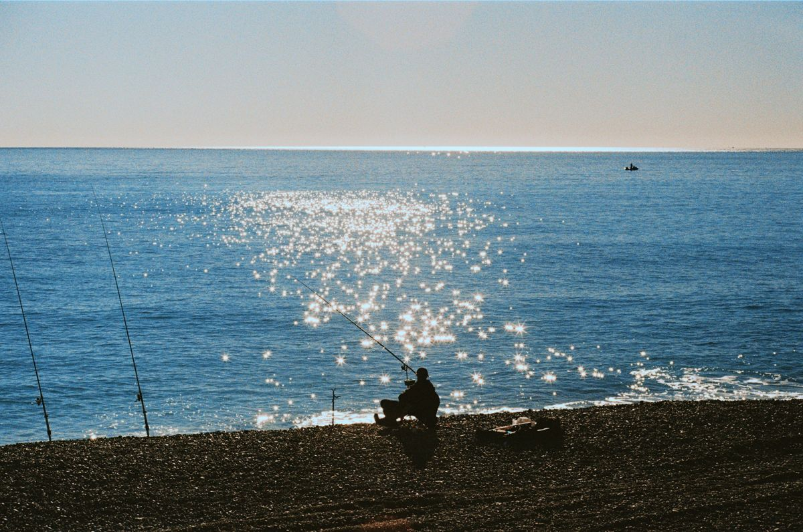
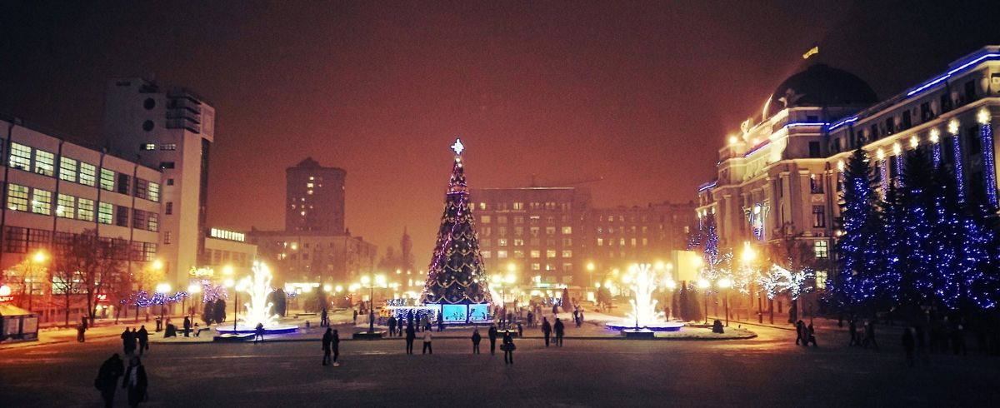

你好！nǐ hǎohello
我是wǒ shì1SG be
严鑫。Yán Xīnname
我wǒ1SG
研究yánjiūstudy
人们rénmenperson-PL
如何rúhéhow
学习xuéxílearn
语言，yǔyánlanguage
教jiāoteach
中文，ZhōngwénChinese
偶尔ǒu'ěrsometimes
拍照。pāizhàophotograph
Hello! I’m Xin Yan. I study how people learn languages. I teach Chinese. And sometimes take photographs.
用放大镜划过这些字试试
31.77°N117.19°E合肥2011–15
安徽大学 学士
俄语语言文学
39.99°N116.30°E北京2019–22
北京大学 硕士
汉语国际教育
52.21°N0.12°E剑桥2022–26
剑桥大学 博士
汉语语言学与语言习得
我正以 的身份读这段话。
选一个，后面的卡片会为你重新洗牌
教学
剑桥大学代任讲师与本科生辅导课教师
北京大学（燕京学堂 · 预科项目）助教
乌克兰哈尔科夫国立大学汉语教师
读书郎教育（HKG: 2385）课程设计与讲授
五万个点，每个点代表十人次——我在读书郎累计 50 万+ 的学习者参与。用鼠标划过这些点试试
Colorless green ideas sleep furiously.
发表
《单语者、双方言者与双语者普通话中的实体与事件锚定》
俄语母语者对二语汉语 wh 成分的歧义消解
俄语母语者对连词“和”的习得
关于二语汉语歧义消解的期刊论文
GASLA 18 论文集，联合编辑
单方言与双方言普通话的指称锚定
俄语母语者对二语汉语 wh 成分歧义消解中的接口问题
二语汉语接口处的 wh 成分歧义消解：韵律与句法
俄语母语者对汉语功能词“和”的习得
俄语母语者对二语汉语连词“和”的习得
汉语“在”字的用法


AI 语言学习工具